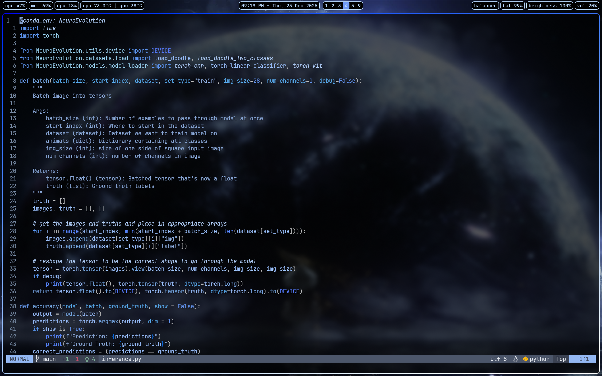

Example Markdown Post
December 25, 2024
This is an example post showing all the markdown features you can use.
Text Formatting
You can write in bold, italic, or use inline code.
Here's a sidenote1Sidenotes appear in the margin on wide screens in action.
Links and Images
Link to Google or another page.
Add an image:

Code Blocks
def greet(name):
return f"Hello, {name}!"
print(greet("world"))Math
Inline math like $E = mc^2$ or $\sum_{i=1}^n i = \frac{n(n+1)}{2}$.
Display math on its own line:
$$\int_0^\infty e^{-x^2} dx = \frac{\sqrt{\pi}}{2}$$
Lists
- First item
- Second item
- Third item